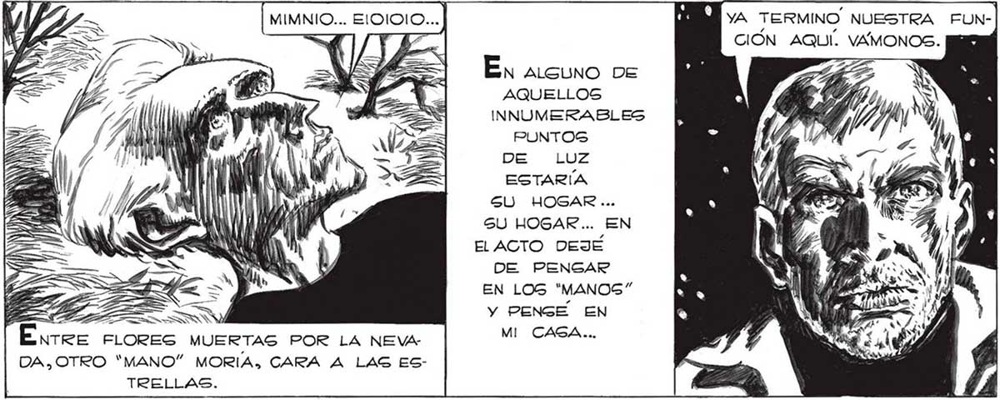

MIMNIO... ElOIOIO... O YA TERMINO NUESTRA FUNd A CIÓN AQUI. VAMONOS. SS PERDONE, SEÑOR, PERO ANTES DE IRNOS DEBERIAMOS EXAMINAR DE CERCA LA CÚPULA DESTRUIDA . a // En ALGUNO DE AQUELLOS INNUMERABLES PUNTOS DE LUZ ESTARÍA SU HOGAR ... SU HOGAR... EN EL ACTO DEJÉ DE PENGAR FA o > EN LOS "MANOG” MÁ == Y PENGE EN Énree flores MUERTAS POR LA NEVA MI CAGA... DA,OTRO “MANO” MORIA, CARA A LAG ESTRELLAS. 1 AN y n= : Ei HE == GS -D) E y FS / Un FRAGOR SORDO LO INTERRUMPIO; RETEMBLO EL PIGO COMO Gl UN TERREMOTO SACUDIERA LA CIUDAD. LOS "SURBOS:.. HAN QUE- NO TANTO APURO, JUAN + FRANGO TIE LOS “'GURBOS” ESTÁN DEMASIADO OCUDADO SIN GUIA Y EMPIE- NE FPAZON. DEBEMOS COMPLETAR LA | | £xnos EN ANIQUILARSE : NO GREO QUE ZAN A DESTRUIRGSE. a INFORMACION QUE YA TENEMOS. EXA” CORRAMOS YA MAYOR PELIGRO. NOS O TT MINANDO LOS RESTOS DE LA GUÚPUE A LA GABREMOS CÓMO SON LOS ELLOS... Brormos DE LA AZOTEA. PASAMOS ENTRE HOMBRES-ROBOTS MUERTOS, PERO NI MIRE. ERAN SOLO | ' MIN | , . A OBSTACULOS QUE WS E > Mm] RETRASABAN MI LN y : REGRESO A ELENA, A MARTITA ... ... CREO ADIVINAR...¡ES UNA DE ESAS | BOLAS COMO DE FUEGO QUE HEMOS VISTO CAER ANTES! EN WA | | 11 W N NN N Y 0 Y y MD YY NA
